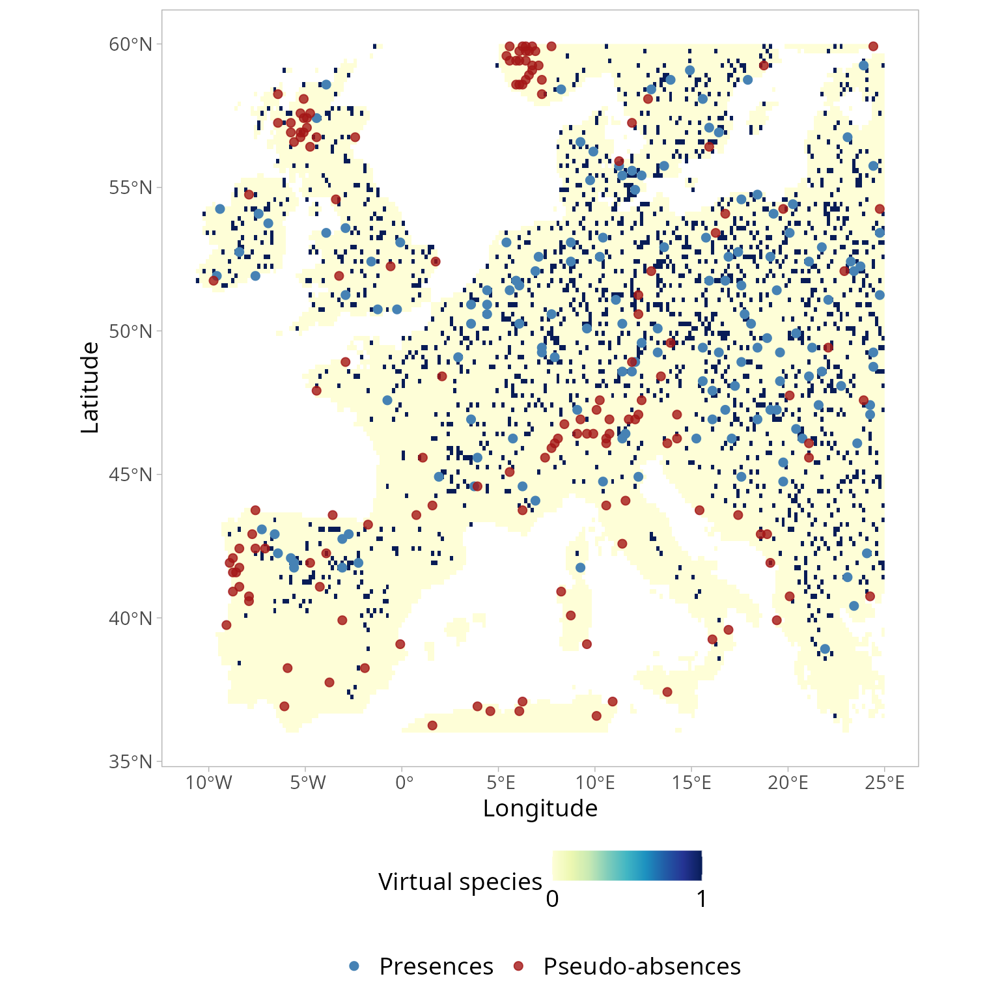

USE vignette
Daniele Da Re, Enrico Tordoni, Manuele Bazzichetto
USE_vignette.RmdThis vignette shows the different functionalities, as well as related
practical examples, of the USE package.
1. Create Virtual Species
First, download bioclimatic variables from WorldClim and crop them to the European extent.
Worldclim <- geodata::worldclim_global(var='bio', res=10, path=getwd())
envData <- terra::crop(Worldclim, terra::ext(-12, 25, 36, 60))Then, generate a virtual species using the bioclimatic variables
downloaded in the previous step. For details about the methodology used
to create a virtual species, see the vignette
of the virtualspecies R package.
#create virtual species
myRandNum <- sample(1:19,size=5, replace = FALSE)
envData <- envData[[myRandNum]]
set.seed(123)
random.sp <- virtualspecies::generateRandomSp(raster::stack(envData),
convert.to.PA = FALSE,
species.type = "additive",
realistic.sp = TRUE,
plot = FALSE)
#reclassify suitability raster using a probability conversion rule
new.pres <- virtualspecies::convertToPA(x=random.sp,
beta=0.55,
alpha = -0.05, plot = FALSE)
#Sample true occurrences
presence.points <- virtualspecies::sampleOccurrences(new.pres,
n = 300, # The number of points to sample
type = "presence-absence",
sample.prevalence = 0.6,
detection.probability = 1,
correct.by.suitability = TRUE,
plot = TRUE) 
Generate a presence-only data set.
2. Generating the environmental space
First, the environmental space is generated by performing a principal component analysis (PCA) on a raster stack that includes the selected spatial environmental layers (such as precipitation and temperature). In practice, the PCA operates on the values of the environmental conditions linked to the pixels of the spatial environmental layers. Next, the first two principal components are extracted from the PCA to create a two-dimensional environmental space (it’s important to note that the current version of USE only supports uniform sampling in two dimensions).
Once the two principal components are obtained, a new “spatial object” is created, with the PC-scores (which represent the projection of the environmental pixels within the two-dimensional space) serving as the object’s coordinates. This object is then scanned systematically to gather pseudo-absences. It’s worth mentioning that, at this stage, all PC-scores, except those associated with the presence of the virtual species, are considered potential pseudo-absences.
The function USE::optimRes can be used to find the
optimal resolution (i.e., the one providing the best trade-off between a
fine resolution and the overfitting of the environmental space) of the
sampling grid that will be used to collect the pseudo-absences within
the environmental space (see below).
rpc <- rastPCA(envData, stand = TRUE)
dt <- na.omit(as.data.frame(rpc$PCs[[c("PC1", "PC2")]], xy = TRUE))
dt <- sf::st_as_sf(dt, coords = c("PC1", "PC2"))
myRes$Opt_res## [1] 53. Uniform sampling of the environmental space
To provide a clear example, the function
USE::uniformSampling is utilized below to systematically
search through the environmental space and gather a specific number of
observations from each cell within the sampling grid. The resolution of
this grid was determined beforehand using the USE::optimRes
function. It’s important to note that in the given example, both the
presences and pseudo-absences of the virtual species are potentially
sampled by the USE::uniformSampling function, as the main
purpose is to demonstrate its operation. In the subsequent section, the
USE::uniformSampling function will be internally called by
USE::paSampling, exclusively focusing on sampling
pseudo-absences.
myObs <- USE::uniformSampling(sdf=dt,
grid.res=myRes$Opt_res,
n.tr = 5,
sub.ts = TRUE,
n.ts = 2,
plot_proc = FALSE)Have a look at the observations sampled using
USE::uniformSampling
head(myObs$obs.tr)## Simple feature collection with 6 features and 3 fields
## Geometry type: POINT
## Dimension: XY
## Bounding box: xmin: -2.51107 ymin: -3.010072 xmax: -0.3051739 ymax: -2.724758
## CRS: NA
## x y ID geometry
## 21228 -3.750000 43.41667 21228 POINT (-2.51107 -2.732245)
## 21229 -3.583333 43.41667 21229 POINT (-2.380254 -2.724758)
## 2174 -5.083333 58.25000 2174 POINT (-0.6214643 -2.803959)
## 8156 -6.750000 53.58333 8156 POINT (-1.023063 -2.778233)
## 7519 -5.916667 54.08333 7519 POINT (-0.52659 -2.733742)
## 4958 -4.750000 56.08333 4958 POINT (-0.3051739 -3.010072)Visualizing the coordinates (PC-scores) of the observations sampled
in the environmental space using USE::uniformSampling
demonstrates the effectiveness of uniformly sampling the environmental
space. This approach enables the collection of data that accurately
represents the entire range of environmental gradients. Moreover, it
mitigates the influence of “sample location bias,” which arises from
randomly sampling observations in the geographical space and often
results in an overrepresentation of the most frequently encountered
environmental conditions. Uniform sampling mitigates the adverse impact
of sample location bias, leading to a more comprehensive understanding
of environmental variations.
env_pca <- c(rpc$PCs$PC1, rpc$PCs$PC2)
env_pca <- na.omit(as.data.frame(env_pca))
ggplot(env_pca, aes(x=PC1))+
geom_density(aes(color="Environment"), size=1 )+
geom_density(data=data.frame(st_coordinates(myObs$obs.tr)),
aes(x=X, color="Uniform"), size=1)+
scale_color_manual(name=NULL,
values=c('Environment'='#1E88E5', 'Uniform'='#D81B60'))+
labs(y="Density of PC-scores")+
xlim(-5,3)+ ylim(0,1)+
theme_classic()+
theme(legend.pos="bottom",
text = element_text(size=14),
legend.text=element_text(size=12))
ggplot(env_pca, aes(x=PC2))+
geom_density(aes(color="Environment"), size=1 )+
geom_density(data=data.frame(st_coordinates(myObs$obs.tr)),
aes(x=Y, color="Uniform"), size=1)+
scale_color_manual(name=NULL,
values=c('Environment'='#1E88E5', 'Uniform'='#D81B60'))+
labs(y="Density of PC-scores")+
xlim(-5,3)+ ylim(0,1)+
theme_classic()+
theme(legend.pos="bottom",
text = element_text(size=14),
legend.text=element_text(size=12))
4. Uniform sampling of the pseudo-absences within the environmental space
The USE::paSampling function performs the uniform
sampling of the pseudo-absences within the environmental space through a
2-step procedure:
First, a kernel-based filter is used to exclude from the environmental space observations associated with environmental conditions that are more likely to be suitable for the species. To identify those conditions, the kernel-based filter uses information about the environmental conditions where the species is present (i.e., presence locations). In a nutshell, kernel density estimation is used to derive the probability density function of the observations associated with the presence of the virtual species within the 2-dimensional environmental space. The observations associated with a probability equal to or greater than a given threshold (by default set to 0.75 in
USE::paSampling) are deemed to feature suitable environmental conditions for the species. All observations within the space characterized by this combination of environmental conditions have therefore to be excluded from the subsequent step, namely the uniform sampling of the pseudo-absences, to reduce the number of false-absences introduced in the dataset used to train (and test) the species distribution model. To this aim, a convex hull is built to delimit the areas identified by the kernel-filter as those potentially featuring suitable conditions for the virtual species, and all observations (i.e., PC-scores) within the convex hull are excluded from the environmental space;Second, the environmental space is systematically scanned to uniformly sample the remaining observations, specifically those located outside the convex hull established in the previous step. These sampled observations constitute the set of pseudo-absences employed for training and testing the species distribution model. This second step is carried out with by the
USE::paSamplingfunction (internally called byUSE::paSampling). Pseudo-absences are randomly sampled within each cell of the sampling grid mentioned in the previous section.
myGrid.psAbs <- USE::paSampling(env.rast=envData,
pres=myPres,
thres=0.75,
H=NULL,
grid.res=as.numeric(myRes$Opt_res),
n.tr = 5,
prev=0.3,
sub.ts=TRUE,
n.ts=5,
plot_proc=FALSE,
verbose=FALSE)Visualizing the coordinates (PC-scores) of the pseudo-absences
sampled in the environmental space using
USE::paSampling
ggplot(env_pca, aes(x=PC1))+
geom_density(aes(color="Environment"), size=1 )+
geom_density(data=data.frame(st_coordinates(myGrid.psAbs$obs.tr)),
aes(x=X, color="Uniform"), size=1)+
geom_density(data=terra::extract(c(rpc$PCs$PC1, rpc$PCs$PC2), myPres, df=TRUE),
aes(x=PC1, color="Presence"), size=1 )+
scale_color_manual(name=NULL,
values=c('Environment'='#1E88E5', 'Uniform'='#D81B60', "Presence"="black"))+
labs(y="Density of PC-scores")+
xlim(-5,3)+ ylim(0,1)+
theme_classic()+
theme(legend.pos="bottom",
text = element_text(size=14),
legend.text=element_text(size=12))
ggplot(env_pca, aes(x=PC2))+
geom_density(aes(color="Environment"), size=1 )+
geom_density(data=data.frame(st_coordinates(myGrid.psAbs$obs.tr)),
aes(x=Y, color="Uniform"), size=1)+
geom_density(data=terra::extract(c(rpc$PCs$PC1, rpc$PCs$PC2), myPres, df=TRUE),
aes(x=PC2, color="Presence"), size=1 )+
scale_color_manual(name=NULL,
values=c('Environment'='#1E88E5', 'Uniform'='#D81B60', "Presence"="black"))+
labs(y="Density of PC-scores")+
xlim(-5,3)+ ylim(0,1)+
theme_classic()+
theme(legend.pos="bottom",
text = element_text(size=14),
legend.text=element_text(size=12))
Visualizing the geographic coordinates of the pseudo-absences sampled
in the environmental space using USE::paSampling
ggplot()+
stars::geom_stars(data = stars::st_as_stars(new.pres$pa.raster), alpha = 0.5 )+
scale_fill_manual(values =viridis::viridis(2),
na.value = "transparent",
labels = c("Absence", "Presence", ""))+
geom_sf(data=myPres,
aes(color= "Presences"),
alpha=1, size=2, shape= 19)+
geom_sf(data=st_as_sf(st_drop_geometry(myGrid.psAbs$obs.tr), coords = c("x","y"), crs=4326),
aes(color="Pseudo-absences"),
alpha=0.8, size=2, shape = 19 )+
scale_colour_manual(name=NULL,
values=c('Presences'='steelblue', 'Pseudo-absences'='#A41616'))+
labs(x="Longitude",
y="Latitude",
fill="Virtual species")+
theme_light()+
theme(legend.pos="bottom",
legend.background=element_blank(),
legend.box="vertical",
panel.grid = element_blank(),
text = element_text(size=14),
legend.text=element_text(size=14),
aspect.ratio = 1,
panel.spacing.y = unit(2, "lines"))
5. Effect of the kernel density threshold on the environmental sub-space sampled to collect pseudo-absences
Knowing how USE::paSampling operates evidences the
importance of carefully selecting a meaningful threshold for the kernel
density estimation to delimit the environmental sub-space for the
uniform sampling. However, visualizing the impact of different threshold
selections can be challenging. To address this, we have incorporated the
USE::thresh.inspect function. This function generates plots
that depict the entire environmental space alongside the portion that
would be excluded based on a specific kernel density threshold.
By experimenting with various threshold values, users can observe how
each selection affects the delineated area for collecting
pseudo-absences. In general, opting for a lower threshold value leads to
the exclusion of a larger portion of the environmental space. By
allowing users to freely determine the threshold value for the
kernel-based filter, USE enables the handling of
pseudo-absence sampling under diverse ecological scenarios, such as
those involving generalist or specialist species or sink
populations.
USE::thresh.inspect(env.rast=envData,
pres=myPres,
thres=c(0.1, 0.25, 0.5, 0.75, 0.9),
H=NULL
)